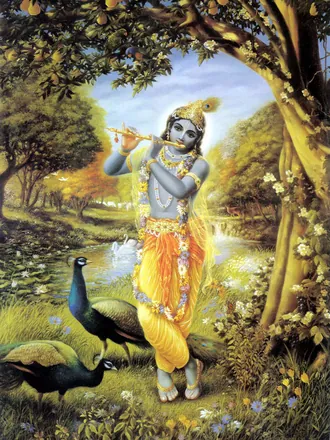
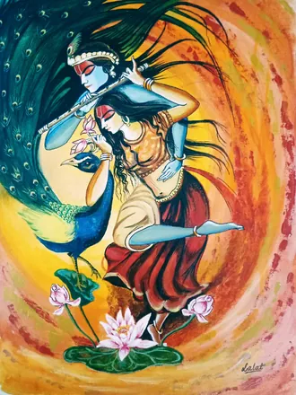
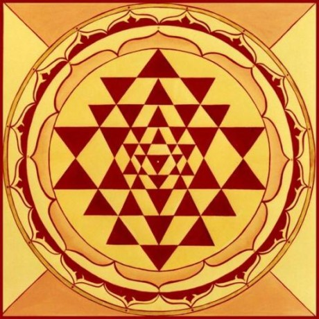

Ānanda (joie profonde, béatitude) Saṅgam (confluence, rencontre) est une expression sanskrite qui peut se traduire par « Rencontre dans la félicité » ou « Union dans la joie profonde ». Ce nom de groupe incarne le point de rencontre où les sons et les âmes s’unissent, comme des rivières qui se rejoignent, pour créer un espace de bonheur et de bienveillance partagés.
Nous sommes un nouveau collectif musical de Québec (instruments variés, voix) et nous vous invitons à découvrir le kirtan : un chant collectif de mantras issus principalement des traditions hindoue et bouddhiste. Au fil des mélodies, nos voix s’unissent pour nous offrir un moment de communion par le son et révéler la paix du cœur.
Le kirtan est semblable à un feu sacré que l’on allume ensemble. Portés par les chants et la musique de notre collectif, nous vous offrons un espace bienveillant, accueillant et sans jugement pour vous libérer de ce qui vous pèse, accueillir l’instant présent et repartir plus légers, libres et alignés avec votre essence véritable. Ensemble, nous élèverons nos voix et nos cœurs pour rejoindre une vibration harmonieuse qui transcende le temps et l’espace.
Tout le monde est bienvenu. Invitez vos amis et venez comme vous êtes, aucune expérience en chant n’est nécessaire.
Notre groupe est aussi ouvert à accueillir d’autres musiciens ou chanteurs et chanteuses selon votre élan ; n’hésitez pas à nous contacter pour vous joindre au collectif et offrir le kirtan avec nous !
Au grand plaisir d’être ensemble !
Questions, commentaires, booking :
raffael.jomphe@gmail.com
Prochain Kirtan
- En préparation,
date à venir bientôt !

Exemples de chants
Voici une sélection de chants de différents artistes que nous apprécions, tirés de YouTube, ainsi que quelques enregistrements démo bruts, afin de vous faire découvrir notre univers musical et les mantras qui nous inspirent. Cette liste, bien sûr non exhaustive, vous donnera un aperçu des mélodies et des vibrations qui nous animent.
Nous nous inspirons de certaines de ces pièces en les réinterprétant à notre façon, avec nos voix et nos instruments, tout en y apportant notre touche personnelle. Notre répertoire s’enrichit également de compositions originales créées par nos musiciens.
Et parce que la musique est avant tout une aventure de partage et de découverte, vos suggestions et vos coups de cœur sont toujours les bienvenus, écrivez-nous !